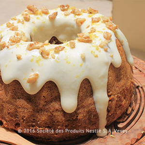
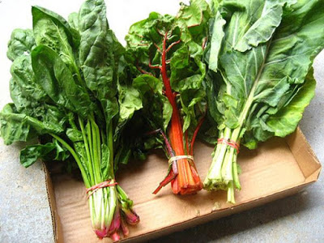
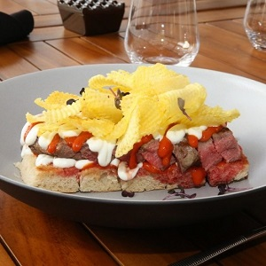

| تشهد مصر هذه الأيام تقلبات جوية، قد تؤثر على صحة الكثيرين بسبب تغيير الملابس من الخامات الخفيفة للثقيلة، وقد تُصيب البعض بالبرد والانفلونزا، لهذا إليك بعض المشروبات الطبيعية للوقاية من نزلات البرد، وتخفيف حدة أعراضه. |
القرفة والزنجبيل
يعتبر من المشروبات الحارقة التي تساعد على توليد الطاقة، وتحتوي القرفة على فيتامين سى مما تقوي المناعة لدى الإنسان، ويحتوي الجنزبيل على خصائص مضادة للالتهابات تساعد في علاج البرد.
ضع ملعقة من القرفة مع الزنجبيل في قدر ماء على النار، حتى الغليان، ويمكنك إضافة العسل أو السكر للتحلية.
لا يفضل تناول القرفة والجنزبيل بكثرة لأصحاب الضغط المرتفع، إذ تعمل القرفة على رفع ضغط الدم.
النعناع والليمون
يحتوي كلًا من النعناع والليمون على فيتامينات تقوي جهاز المناعة، لهذا يمكن إضافته لأي مشروب كونه يجتوي على مضادات للبكتيريا، بينما يحتوي النعناع على فيتامينات تهديء منطقة الصدر وتعالج الحساسية.
ضعي ماء ساخن في كوب به عصير نصف ليمونة مع القشر للاستفادة من فوائد الليمون قدر الإمكان، وضعي القليل من أوراق النعناع الطازج، وضع على الكوب غطاء حتى يتخمر الليمون والنعناع، واشربيه دافئًا.
العسل والليمون
يمكنك تناول مشروب الليمون فقط مع العسل لتخفيف حدة أعراض البرد، والقضاء على البتكيريا الموجودة في الحلق التي تسبب الكحة والحساسية، أو يمكن إضافة الشاي للمشروب لمحبي الشاي.
ضع الماء المغلي في كوب به عصير نصف ليمونة، مع عسل، واخلطهم جيدًا ويُشرب دافئًا.
| هل تريد أن تتمتع بأقوى جهاز مناعى ومزاج معتدل ولياقة عالية وعندما تفكر فى أفضل المشروبات لك ستجيب على الفور بالماء، لكن توجد هناك العديد من المشروبات والسوائل الأخرى التى تستحق أن تضيفها إلى نظامك الغذائى “هى بعض المشروبات التى لها فوائد صحية هائلة بدءاً من علاج أو الوقاية من بعض المشاكل الصحية البسيطة مثل عسر الهضم وتنتهى بالحماية من أخطرها مثل هشاشة العظام” |
شاى النعناع
يخفف من الشد العضلى ويحمى من الإصابة بعسر الهضم لأن النعناع مضاد للتقلصات ويعمل على إرخاء العضلات وبذل تحارب تيبسها وآلامها. ويساعد شاى النعناع فى عملية الهضم من خلال تحفيز حركة الغذاء فى الأمعاء من خلال الجهاز الهضمى.
اللبن المنزوع الدسم بنسبة
يساعد على الحماية من الإصابة بهشاشة العظام لأنه يحتوى على مكونات وجبة صحية من الكربوهيدرات والبروتينات والقليل من الدهون التى يمتصها جسم الإنسان ببطء ولكن مفعولها يظل لفترة طويلة من الزمن. كما يساعد اللبن على ثبات نسبة سكر الدم، كما أنه مصدر للكالسيوم لأنه يحتوى على فيتامين (د) وهو هام لتحقيق أقصى امتصاص للكالسيوم، ويساعد أيضاً الجسم التوقف عن تخزين الدهون وأثبتت الدراسات الحديثة أن السيدات التى تستهلك من ثلاثة – أربعة مقادير من منتجات الألبان قليلة الدسم (منها اللبن بالطبع) تفقد تقريباً ضعف وزن هؤلاء اللاتي تستهلكن منتجات الألبان بكميات أقل “فالكالسيوم يجعل خلايا الجسم تحرق الدهون بدلاً من أن تختزنها” وهذا يجعل هدف الحفاظ على الوزن واللياقة هدفاً سهلاً للغاية.
عصير البرتقال
يحمى من الإصابة بالمياه البيضاء والسرطان والتشوهات الخلقية وينشط الجهاز المناعى، مصدر هام لفيتامين (ج). كما أن عصير البرتقال مضاد للأكسدة يحمى العديد من الأمراض بما فيها المياه البيضاء (السحابة التى تتكون على عدسة العين والتى قد تؤدى إلى العمى) وسرطان الرئة. يحمى فيتامين (ج) من ضرر الأكسدة التى تجعل الخلايا سرطانية كما يقوى من وظيفة الخلايا المناعية والذى يمكن الجسم من محاربة العدوى بكفاءة عالية ، كما أن عصير البرتقال مصدر جيد للفولات والذى يقى من تشوهات القناة العصبية للأجنة وإذا كنت تريد حماية العظم يمكنك تجربة عصير البرتقال المدعم بالكالسيوم.
عسل النحل
يعتبر العسل سهل التحضير حيث تقوم بوضع ملعقتين صغيرتين من العسل في كوب من الماء الدافئ وتقوم بإذابته ، وهو يحوي نسبة مرتفعة من المواد المساعدة على إمداد الجسم بالطاقة التي يحتاجها. كما أنّ تناول مشروب العسل يساعد على تفتيت السكر الذي يحصل عليه الجسم ما يمنحه القدرة على الإستفادة منه لتجديد الطاقة.
عصير الطماطم
عصير الطماطم من العناصر المفيده ايضا الذي يعتبر صحياً وأساسياً للحصول على الطاقة التي يحتاجها جسمك خلال النهار لأداء وظائفه ولإتمام مهامك اليومية بحيوية ونشاط. فالطماطم تمنح جسمك المعادن والمواد المغذية الأساسية للحصول على الطاقة.
الشوكلاته الساخنه
الثيوبرومين وهو جزء عضوي طبيعي يوجد في تركيبة الكاكاو يساعد في تقوية مينا الأسنان وفقاً لما نشرته جامعة تولين، كما أن مادة الفلافونويدات هي نوع من المواد الكيميائية النباتية والتي توجد بشكل طبيعي في شجرة الكاكاو التي تستخلص منها الشيكولاتة، ونظراً لبنيتها الكيميائية الفريدة، تحتوي الفلافونويدات علي مضادات للأكسدة و مضادات للالتهاب و تأثير دفاعي عن الخلايا.
السحلب
السلحب هو عشبه يشببها الناس بالحليب ويعتقدون انها نوع من الأنواع الحليب، لكنه عشبة مشهور تناوله في فصل الشتاء لفوائده الصحية: يعتبر علاجًا فعالاً للأطفال الذين يعانون من الإسهال. يقوم بعلاج قرحة المعدة والإثنى عشر، ووقف النزيف الداخلي للمعدة. يعتبر غذاء فعالاً للأطفال ولكبار السن حيث يمد الجسم بالكالسيوم؛ المفيد للأسنان والعظام. يقوم بتقوية المناعة لدى الأطفال. يعطى طاقة عالية لجسم، خاصة في فصل الشتاء؛ حيث يقوم بتقوية الدورة الدموية. يعد السحلب ملطفًا جيدًا للمعدة والقولون.
شاي أخضر بالحلبة
الحلبة تقلل من الكوليسترول، وتحتوي الحلبة على مادة صابونين، التي تعمل على تقليل امتصاص الجسم للكوليسترول، وتقلل من نسبة الدهون المسببة للأمراض. الحلبة تحمي من السكّري تم اكتشاف حمض أميني يوجد فقط بالحلبة يساعد على تحسين إفراز الأنسولين في حالة إرتفاع مستوى الجلوكوز بالدم ، مما يساعد على الحماية من مرض السكّري و أيضاً علاجه. الحلبة للوقاية من السرطان وجدت بعض الدراسات أن الألياف الموجودة بالحلبة قد تساعد على الحماية من بعض أنواع السرطان ، و أيضاً أن مادة صابونين، الموجودة بالحلبة ترتبط مع المواد الضارّة الموجودة بالطعام، مما يحمي القولون من السرطان. الحلبة لعلاج مشكلات الهضم تساعد أيضاً على تخفيف الحموضة بسبب وجود مواد بها تساعد على تهدئة التهابات الأمعاء و المعدة و تغطيتها بطبقة للحماية ، حيث وجدت دراسة أن تناول الحلبة قبل الوجبات بنصف ساعة مرتين يومياً لمدة أسبوعين لها أثر كبير في علاج الحموضة . الحلبة تساعد على زيادة الوزن من خلال العمل على فتح الشهية. تُستخدم الحلبة كمدرّ طبيعي للبن الأمهات المرضعات لزيادة تدفّق اللبن.
المرمريه
تحتوي عشبة المريمية على مركبات و زيوت طيارة و أملاح معدنية و فيتامينات معروفة بقدرتها على الوقاية من العديد الأمراض الميرمية و الالتهابات و الفطريات، ولذا لها فوائد عديدة نقدمها لكم في نقاط: تعتبر أوراق المريمية الطازجة مصدر جيد للحصول على مضادات الأكسدة و فيتامين “C” الذي يحفز من إفراز الكولاجين في البشرة، و يساعد في الحفاظ على صحة الأوعية الدموية و الجلد و العظام. احتوائها على نسبة عالية من الفيتامينات و المعادن يساعد على تحفيز جهاز المناعة و الوقاية من العدوى و التخلص من عوامل الأكسدة. يمكن استخدام زيت المريمية في دهان الجسم للتخلص من آلام الشد العضلي، الروماتيزم، و التهابات الأعصاب. تعمل على التقليل من التعرق الزائد للجسم. تساعد على تنشيط الدورة الدموية في الجسم . تساعد على منع تساقط الشعر وتقويته. تعمل على علاج نزلات البرد و الأنفلونزا و حساسية الصدر.
اليقطين
يدخل اليقطين أو المعروف في بعض البلدان العربية بقرع العسل في العلاجات المختلفة، لما له من فوائد صحية مذهلة، وهي: يعالج اضطراب التبول اللاإرادي. مدر للبول ويعمل كملين عند الإصابة بالأمساك. ينشط الكلى ويقوي من كفائتها على طرد السموم من الجسم. يعالج من سرطان البروستاتا. مهدئ للأعصاب. يعالج آلام الأسنان واللثة. ينشط الكبد. يعالج من أمراض الصدر والجهاز التنفسي كالسعال. يتم تناوله بكثرة في المناطق الحارة لأنه يحمي من العطش
|  |  |  |